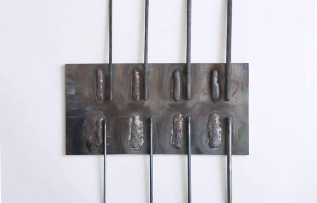

Tube metal
A Tube metal is a metal rod for hard surfacing with gas and electric welding to improve abrasion resistance and Welding work using it is easily done for drilling performance. Hard surfacing on any spot and regeneration of machine parts wore out. Improvement costs of abarasion resitance of not only excavation tools for drilling and civil engineering works but also machine parts for various work of construction, agriculture and mining. are reduced.


Application
- Drilling work (Blade edges of tricone bits, Hard surfacing for stabilizer part and so on)
- Civil Engineerin work (Blade edge of an auger bit, Blades of a cement mixier)
- Construction machine (Eath removing blade, ripper and rake blade and of a scraper and a bulldozer)
- Agricultural machine (Blade edges of cultivation tools, reaping tools and so on)
- Mining work (Blade edges of a crusher, a dragline and so on)
Selectable 2 series for gas welding and electric welding in accordance with purposes
Selectable 2 series of tube martal type are prepared. We reccommend TG series for gas welding to improve drilling performance, while TE series to improve abrasion resistance.
4 granule sizes for appication are prepared
4 tip sizes of tboth TG and TE series of tubu metal are prepared respectively. All Tube metals are supplied in the form of mild steep tubes filled with crushed and sized granules of tugsten carbide with surprisingly toughness and very abrision resistace and ferroalloy squeezed in order to improve toughness after welding. Tip sizes are different according to the diameter sizes of tibe metal. Smalles size tips increase volume melting into base metal and improve toghness and abrision resistance. Bigger sizes tips improve exacvation performance instead of less toughness.
Please feel free to contact us when advices on type selection of tube meta are needed..
TG series
for gas welding
TE series
for electric welding
Breathing fume generated in welding is unfavourable to health. Ventilation and wering are starongly reccomended dering the work.
Please store it avoiding humidity because this product rust easily.
Product list of tube matel
| Product | Rod diameter(mm) | Rod lenghth(mm) | Granule size mesh | Granule diameter (mm) | Number of tubess per 1 kg | *1 Welding AC/DC current (A) | *2 Hardness in HRC scale |
|---|---|---|---|---|---|---|---|
| For Gas welding | |||||||
| TG-3 | 3.2 | 350 | 40-60 | 0.59-0.42 | 30-31 | 50-54 | |
| TG-4 | 4.0 | 350 | 30-40 | 0.42-0.59 | 19-20 | 54-63 | |
| TG-5 | 4.8 | 350 | 20-30 | 0.59-0.84 | 13-14 | 60-63 | |
| TG-6 | 6.4 | 350 | 10-20 | 0.84-2.00 | 8-9 | 65-68 | |
| for Electric welding | |||||||
| TE-3 | 3.2 | 350 | 40-60 | 0.59-0.42 | 28-29 | 90-150 | 47-53 |
| TE-4 | 4.0 | 350 | 30-40 | 0.42-0.59 | 17-18 | 120-180 | 47-53 |
| TE-5 | 4.8 | 350 | 20-30 | 0.59-0.84 | 10-11 | 150-200 | 50-60 |
| TE-6 | 6.4 | 350 | 10-20 | 0.84-2.00 | 7-8 | 160-220 | 50-60 |
| GCR | 4.8 | 350 | - | - | 12-13 | 150-200 | 40-47 |
*1 Welding current depends on macine, frequency, type and earthing.
*2 Hardness of a welded part depends on welding state measurement point.
Example of chemical compsitio of tube matel
| Product name | WC+W2C | Cｒ | Fe | Ferroalloy |
|---|---|---|---|---|
| Tube metal | 59.4 | - | 40.1 | 0.50 |
| Tube metal GCR | 19.0 | 30.0 | 50.0 | 1.0 |
The Tube metal GCR is an electric welding rod suitable for hard surafcing at the point requested both abrision and shock restances
Inquires and more information
Sumiko Resources Exploration & Development Co., Ltd
Sales Group of drilling devices
Address: 3-8-21. Toranomon, Minato-ku,
Tokyo, 105-0001, Japan
TEL：+81-3-5405-2173 /
FAX：+81-3-5405-2175